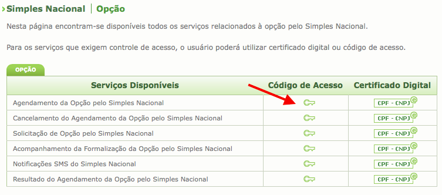

Como alterar de Lucro Presumido
para o Simples Nacional
Tempo de leitura: 10 min |
Entenda como descobrir as pendências da sua empresa para enquadramento no Simples Nacional.
Acompanhe as alterações do simples para 2016
Contexto
Você sabia que com a publicação da Lei Complementar 147 de 2014, a maioria das empresas prestadoras de serviço poderão solicitar o enquadramento no Simples Nacional a partir de 2015?
Isso mesmo. O Simples Nacional é uma ótima opção para desburocratizar inúmeras obrigações acessórias e, na maioria das vezes, diminuir a carga tributária da sua empresa. Recomendo fortemente que você verifique a possibilidade de enquadramento da sua empresa no Simples ao realizar o agendamento do Simples Nacional.
A má notícia
Infelizmente, o governo não facilitou a operação e gerou uma grande confusão para os empresários que desejam optar ao Simples. Vamos desvendar o enigma.
Muito se fala que, entre 03/11 a 31/12 de 2014, as empresas poderão solicitar o agendamento do Simples Nacional. Traduzindo: o governo liberou apenas um agendamento e não a opção de enquadramento no Simples.
Assim, o agendamento possui objetivos distintos para empresas em diferentes situações:
1) Empresas que já reunem as condições necessárias para o enquadramento no Simples Nacional, porém não estão enquadradas.
Essas empresas utilizarão o agendamento para consultar se existe alguma pendência (débito ou administrativa) com os órgãos públicos. Não existindo a pendência, o agendamento automaticamente se transformará em solicitação de enquadramento no Simples Nacional em 01/01/2015. Ou seja, se tudo estiver certinho após verificação de pendência do agendamento, não é preciso fazer mais nada, pois com a solicitação deferida, o pedido de enquadramento será efetuado automaticamente pela Receita Federal.
.2) Empresas que, até o momento, não puderam fazer a opção pelo Simples em virtude de terem uma atividade impeditiva.
Essas empresas utilizarão o agendamento apenas para verificar quais pendências as impedem de realizar a opção do Simples Nacional. Desta forma, poderão se preparar para resolver as pendências e solicitar o enquadramento no Simples a partir do dia 01/01/2015.
Sei que você deve estar pensando no motivo pelo qual o governo não disponibilizou o enquadramento automático após o deferimento do agendamento conforme situação #1. Como estamos em 2014 e a lei que expande o Simples (permitindo mais atividades de serviços do que antes) só entra em vigor em 2015, a receita federal entende que sua empresa ainda tem pendências de cadastro, com atividades não permitidas no Simples.
Se sua empresa encontra-se na situação #2, siga adiante e entenda como realizar o agendamento e identificar as pendências.
realizar o processo de transformação de empresas Lucro Presumido em Simples Nacional.
O processo de enquadramento no Simples Nacional é gratuito e pode ser realizado por você, se seguir os passos descritos neste artigo. Vamos em frente?
Obs.: está em dúvida se sua empresa já está enquadrada no Simples Nacional? Faça a pesquisa gratuitamente aqui, ou acesse wwww.contabilizei.com.br e nossa equipe realizará a pesquisa para você (sem custo).
Quem pode solicitar o enquadramento no Simples Nacional?
- Empresas com atividades permitidas em um dos anexos do Simples Nacional. Consulte aqui.
- Micro e pequenas empresas (ME) e Empresas de pequeno porte (EPP).
- Empresas que não possuam débitos em aberto (aqueles sem negociação/parcelamento) com o Governo.
Obs.: Caso sua empresa não seja ME ou EPP, o seu contador atual pode lhe ajudar realizando uma solicitação de enquadramento de ME e EPP. A solicitação também é gratuita.
Quem NÃO pode solicitar o enquadramento no Simples Nacional?
- Empresas que possuam faturamento que exceda a R$ 3,6 milhões (ou proporcional para empresas novas) no ano calendário ou no anterior.
- Empresas que possuam um ou mais sócios com participação superior a 10% em empresa de Lucro Presumido ou Lucro Real e a soma do faturamento de todas empresas não ultrapasse R$ 3,6 milhões;
- Empresas com um dos sócios com mais de uma empresa optante pelo Simples e a soma dos faturamentos de todas suas empresas ultrapassa R$3,6 milhões
- Empresas que possuam pessoa jurídica (CNPJ) como sócio;
- Empresas que participam como sócias em outras sociedades;
- Empresas que estão em débito com o Instituto Nacional do Seguro Social (INSS), ou com as Fazendas Públicas Federal, Estadual ou Municipal, cuja exigibilidade não esteja suspensa;
- Empresas que possuam Filial ou representante de Empresa com sede no exterior;
- Empresas que são: Cooperativas (salvo as de consumo), sociedades por ações (S/A), ONGs, Oscip, bancos, financeiras ou gestoras de créditos / ativos;
- Empresas que são resultantes ou remanescentes de cisão ou qualquer outra forma de desmembramento de pessoa jurídica que tenha ocorrido em um dos 5 anos-calendário anteriores.
O que é o Agendamento do Simples Nacional?
O governo estima que a demanda de solicitações de enquadramento no Simples Nacional será muito grande. Por isso, está antecipando a solicitação através do Agendamento do Simples Nacional.
O agendamento do Simples Nacional é a possibilidade de você manifestar o interesse da sua empresa pelo enquadramento no Simples Nacional para 2015.
O agendamento pode ser feito entre 03 de novembro e 31 de dezembro de 2014. A resposta ao agendamento será disponibilizada no site do Simples Nacional no primeiro dia útil de janeiro de 2015. O resultado positivo do agendamento já gera a solicitação automática ao Simples Nacional em janeiro.
IMPORTANTE: Infelizmente, só pode solocitar o agendamento do Simples Nacional as empresas que hoje teriam condições de ser enquadradas no Simples. Ou seja, se sua empresa hoje não está enquadrada no simples por algum impediditivo (exemplo: possui atividade que não permitida), não poderá solicitar o enquadramento antes do dia 01 de janeiro de 2015. Leia mais aqui.
Por quê realizar o Agendamento do Simples Nacional?
Se sua empresa hoje está impedida de ser enquadrada no simples nacional - ou seja, possui atividades não permitidas, mas que serão permitidas a partir de 2015 (entenda quais são neste link) - a grande vantagem está em verificar quais pendências sua empresa possui para solicitar o enquadramento do simples a partir do dia 01 de janeiro 2015.
IMPORTANTE:
1. Isto significa que você não conseguirá solicitar o enquadramento do simples antes do dia 01 de janeiro de 2015, pois sob os olhos da receita federal, sua empresa ainda não pode ser enquadrada no simples. Apenas após o dia 01 de janeiro de 2015, que é quando entra em vigor a nova lei de expansão do simples nacional, discutida aqui, sua empresa terá direito a ser enquadrada no Simples.
2. Logo, este agendamento servirá apenas como uma consulta, pois você poderá identificar quais pendências sua empresa possui para enquadramento. Com isso, você terá tempo para regularizar as pendências antes do dia 31 de janeiro (término do prazo de solicitação de enquadramento).
Existem 2 condições:
Condição 1: Se sua empresa hoje não é simples por opção - ou seja, tem todas as condições para estar enquadrado no Simples, mas por algum motivo não realizou o pedido de enquadramento - a grande vantagem está em verificar se sua empresa possui alguma pendência para entrar no Simples. Sabendo quais as pendências agora, te dará tempo suficiente de resolve-las e solicitar o enquadramento antes do dia 31 de janeiro 2015.
Condição 2: Se sua empresa hoje está impedida de ser enquadrada no simples nacional - ou seja, possui atividades não permitidas, mas que serão permitidas a partir de 2015 (entenda quais são neste link) - a grande vantagem está em verificar quais pendências sua empresa possui para solicitar o enquadramento do simples a partir do dia 01 de janeiro 2015.
Como fazer o Agendamento do Simples Nacional?
Se você deseja consultar quais pendências sua empresa possui para solicitar o enquadramento do simples nacional em janeiro de 2015, siga o passo a passo descrito abaixo.
1. Acesse o site do Simples Nacional.
2. Clique em "Caso você não tenha o código de acesso...".
3. Insira o CNPJ da empresa e o CPF do responsável pela empresa perante a Receita Federal".

4. Insira o número do recibo de entrega da declaração do IRPF".
Caso o responsável pela empresa seja isento de declaração do IRPF, a Receita Federal solicita o número do título de eleitor e data de nascimento

5. Copie o código.
6. Passe o mouse em cima de "Simples/Serviços" e clique em "Opção".
7. Selecione a opção "Agendamento da Opção pelo Simples Nacional", clicando na chave.
8. Insira as informações CNPJ, CPF, Código de acesso e caracteres.

9. Clique em "Aceito".

10. Clique em "Iniciar verificação".

11. Resultado da consulta.
a) Sua empresa possui apenas pendências cadastrais:
Se as atividades identificadas como pendência serão aceitas no simples nacional a partir de 2015 (consulte a tabela completa aqui), então não se preocupe. Marque, em sua agenda, para realizar a solicitação de enquadramento no simples a partir de janeiro 2015.
No exemplo abaixo, todas as atividades serão permitidas no Anexo 6 do Simples Nacional a partir de 2015. Então, o empresário poderá solicitar o enquadramento em Janeiro 2015.

b) Sua empresa possui pendências administrativas e débitos:
Isto significa que você deverá resolver as pendências listadas até o dia 31/01/2015 para solicitar o enquadramento no Simples Nacional até 31/01/2015.

Conclusão
Até o dia 31 de dezembro de 2014, as empresas do lucro presumido que HOJE estão impedidas de optarem pelo Simples Nacional, somente poderão consultar as pendências que possuem frente os órgãos públicos para ingressarem no Simples Nacioanl.
O grande benefício deste procedimento de Agendamento do Simples Nacional, é para identificação das pendências que sua empresa possui e resolvê-las antes do prazo final de pedido de enquadramento no Simples (de 01 a 31 de Janeiro de 2015).
Saiba mais:
- Conheça as atividades permitidas no Simples Nacional e as respectivas alíquotas (inclusive as atividades permitidas a partir de 2015).
- Veja o Guia Completo do Simples Nacional somente com o que você precisa saber.
Caso tenha qualquer dúvida quanto a possibilidade de enquadramento no Simples, faça o seu comentário abaixo e será um prazer te ajudar.

Sobre o autor
Vítor Torres é fundador da Contabilizei (o jeito mais fácil e ecônomico de realizar contabilidade), empreendedor e investidor de startups.